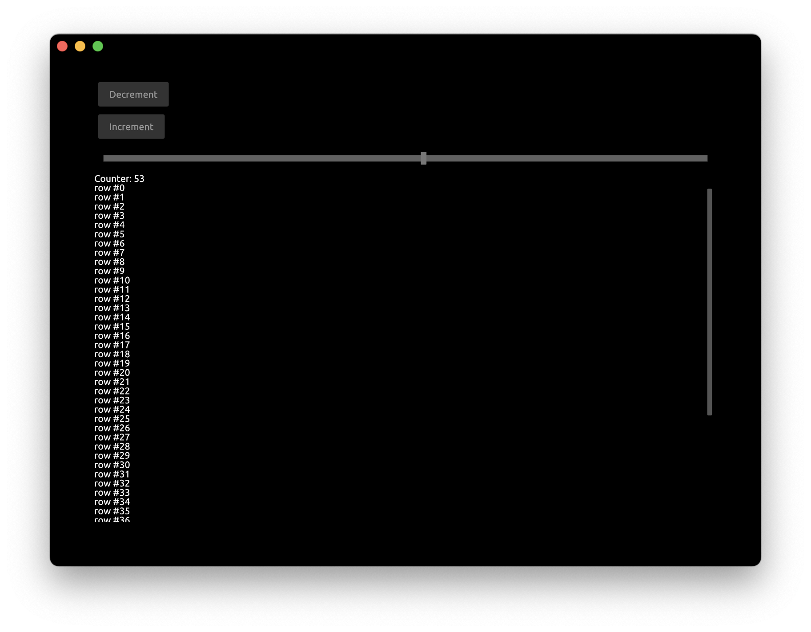
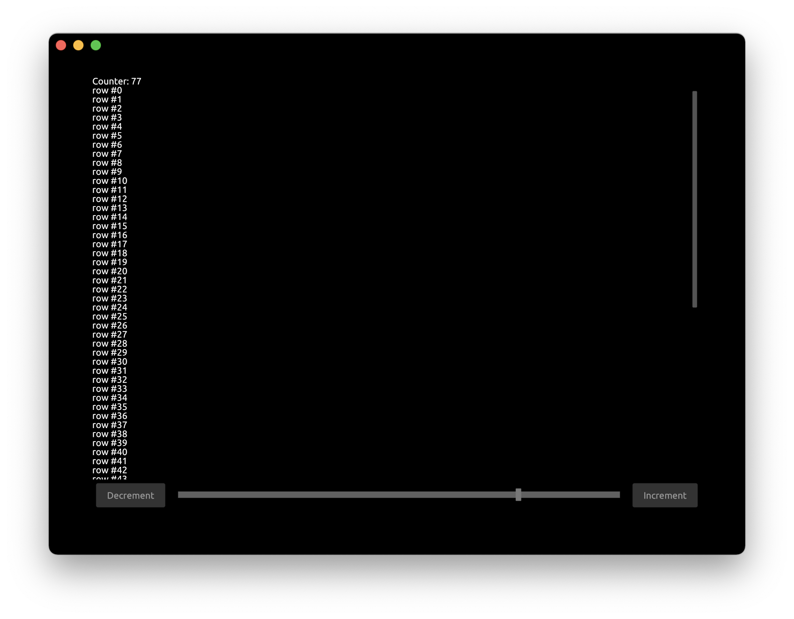
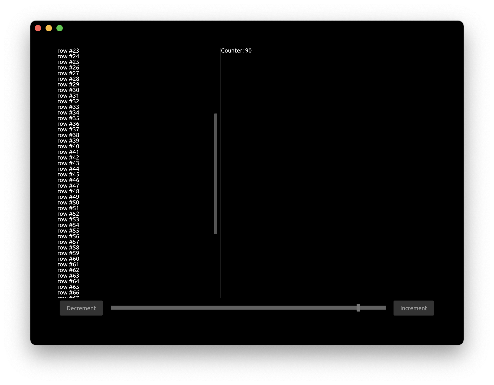

Tutorial: UI Layout
This tutorial builds on top of the previous UI Components tutorial, by modifying it. We will reorganize UI components on the screen using layouting system.
First, let's add another button to decrement the counter.
Update App struct:
#[derive(Default)]
struct App {
window: Window,
pass: Pass,
view: View,
button_inc: Button,
button_dec: Button,
counter: i32,
slider: FloatSlider,
scroll_view: ScrollView,
}
Handle the clicks from the decrement button:
fn handle(&mut self, cx: &mut Cx, event: &mut Event) {
if let ButtonEvent::Clicked = self.button_inc.handle(cx, event) {
self.counter += 1;
cx.request_draw();
}
if let ButtonEvent::Clicked = self.button_dec.handle(cx, event) {
self.counter -= 1;
cx.request_draw();
}
if let FloatSliderEvent::Change { scaled_value } = self.slider.handle(cx, event) {
self.counter = scaled_value as i32;
cx.request_draw();
}
self.scroll_view.handle(cx, event);
}
Update the draw function to draw the decrement button:
cx.begin_padding_box(Padding::vh(50., 50.));
self.button_dec.draw(cx, "Decrement");
self.button_inc.draw(cx, "Increment");
self.slider.draw(cx, self.counter as f32, 0., 100., Some(1.0), 1.0, None);
TextIns::draw_walk(cx, &format!("Counter: {}", self.counter), &TextInsProps::default());
// ...
cx.end_padding_box();

Now let's move these 2 buttons and a slider on the bottom of the app. We also want the buttons to be on the other sides of slider and slider spanning all space in the middle.
cx.begin_padding_box(Padding::vh(50., 50.));
cx.begin_bottom_box();
cx.begin_row(Width::Fill, Height::Compute);
{
self.button_dec.draw(cx, "Decrement");
cx.begin_right_box();
self.button_inc.draw(cx, "Increment");
cx.end_right_box();
self.slider.draw(cx, self.counter as f32, 0., 100., Some(1.0), 1.0, None);
}
cx.end_row();
cx.end_bottom_box();
// ...
cx.end_padding_box();
cx.begin_bottom_boxstarts a block that would be aligned to the bottom of the screencx.begin_rowstarts a container that draws components into a row. Arguments are the sizes of the container:Width::Fillspecifies to span the entire available widthHeight::Computespecifies to use the height of underlying components
- Note we use curly braces to visually distinguish nested block of components
cx.begin_right_boxstarts a block that would be aligned to the right of the screencx.end_right_boxends corresponding right-aligned blockcx.end_rowends corresponding rowcd.end_bottom_boxends corresponding bottom-aligned block
The application now looks like this:

Now let's divide the text area into 2 parts and draw the text in each of them.
Add Splitter to App struct:
struct App {
// ...
splitter: Splitter,
}
Set the initial state for Splitter inside new function:
fn new(_cx: &mut Cx) -> Self {
let mut splitter = Splitter::default();
splitter.set_splitter_state(SplitterAlign::First, 300., Axis::Vertical);
App { scroll_view: ScrollView::new_standard_vh(), splitter, ..Self::default() }
}
Axis::Verticalspecifies that the orientation for divider300.is the initial offset in pixels for divider
Update the handle function:
fn handle(&mut self, cx: &mut Cx, event: &mut Event) {
// ...
self.splitter.handle(cx, event);
}
Update the draw function to use the splitter:
cx.begin_row(Width::Fill, Height::Fill);
{
self.splitter.begin_draw(cx);
{
self.scroll_view.begin_view(cx, LayoutSize::FILL);
cx.begin_column(Width::Compute, Height::Compute);
for value in 0..self.counter {
TextIns::draw_walk(cx, &format!("row #{}", value), &TextInsProps::default());
}
cx.end_column();
self.scroll_view.end_view(cx);
}
self.splitter.mid_draw(cx);
{
TextIns::draw_walk(cx, &format!("Counter: {}", self.counter), &TextInsProps::default());
}
self.splitter.end_draw(cx);
}
cx.end_row();
- We need to enclose the splitter into
begin_rowas we want it to be drawn as a row splitter.begin_drawstarts the splitter block that would be drawn firstsplitter.mid_drawstart the splitter block that be drawn secondsplitter.end_drawends the splitter component
You can run this full example with Cargo:
cargo run -p tutorial_ui_layout
